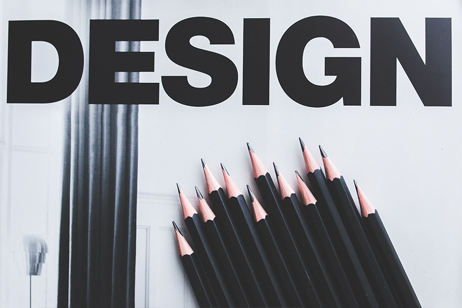

About Me
My name is Silviu Pop, I am a UX designer with two years of experience. My transition from being a Graphic Designer happaned gradually. I had the pleasure of working with a very experienced team of developers on creating chat-bots for different clients from telecom companies to e-commerce shops. I followed my dreams and now I am a UXD student at the University of Applied Science in Den Haag, Netherlands.
Read More-

Design Thinking
Design Thinking is a design methodology that provides a solution-based approach to solving problems. It’s extremely useful in tackling complex problems that are ill-defined or unknown, by understanding the human needs involved, by re-framing the problem in human-centric ways, by creating many ideas in brainstorming sessions, and by adopting a hands-on approach in prototyping and testing.